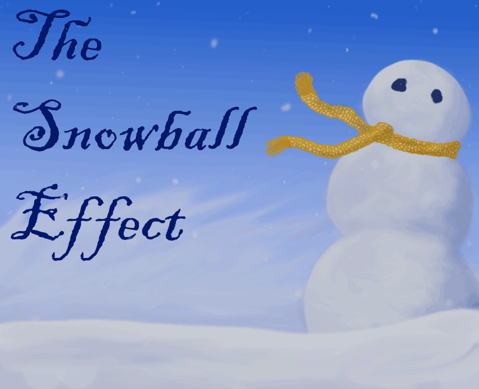
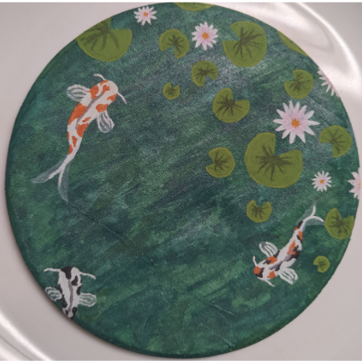
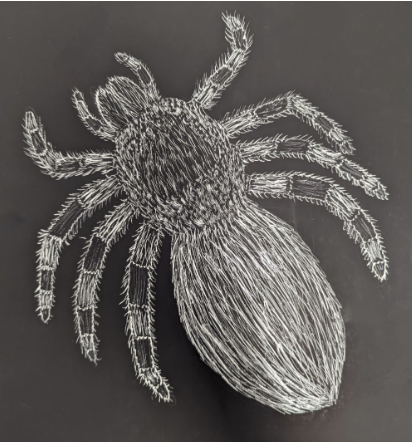
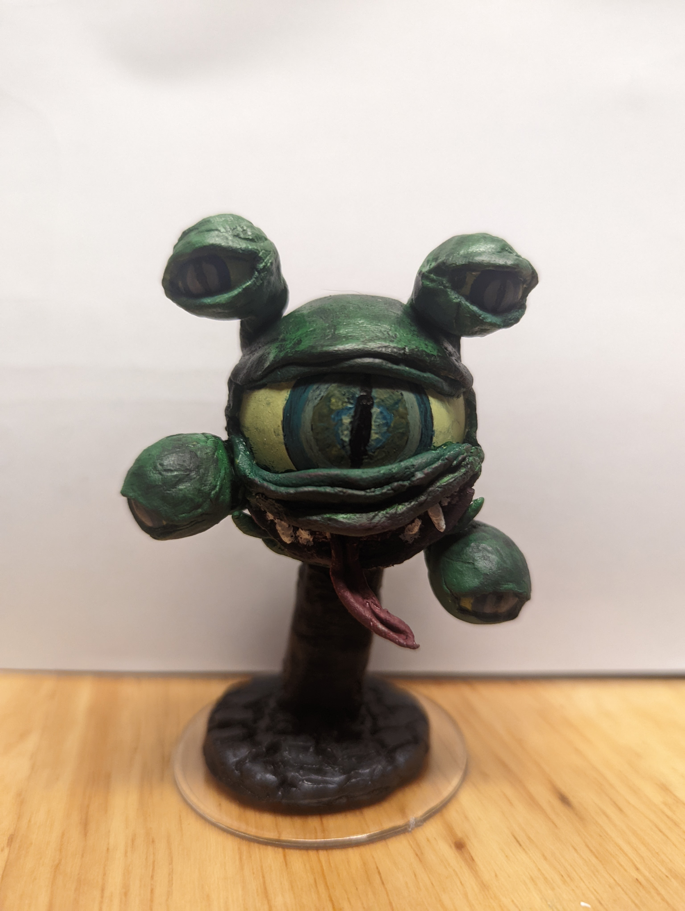

I have many pieces of both digital and physical artwork
Animations and Illustrations

This is a short animation I created frame-by-frame in Photoshop with it's animate feature to
act as my opening for my interactive narrative text game that is still in development
(see Games for more details).
Commissions and Contests
Competed against other candidates in Hunterdon County Vocational School District to work closely
with teachers to create the front cover illustration for the annual Del Val District Arts Festival. My
design was chosen and then used for banners, pamphlet and brochures, posters, invitation and placement cards
for artwork on displays. I designed the art itself using marker and pen, and then it was manipulated in
Photoshop and InDesign to create the various versions to be used to advertise for the festival.
Connected to a client, through Hunterdon County's Bridging the Gap program, to design a logo for
a rental property. I created thumbnails and concept drawings, a final line drawing, and color
comps made for approval in the preliminary design phase, communicated and made many variations
along the way to match the client's specificactions, and then moved to Illustrator to
complete the design and package it.
3D/Physical Art

Painting of a koi fish pond with water lillies and lilly pads on a small circular canvas.
Painting of a red tree against the background of a sunset and a supermoon on
a small rectangular canvas.

Artwork of a Mexican Red-Knee Tarantula created using scratchboard. Drawn (scratched?) from life.

Modeled a 'Spectator' creature using air-dry modeling clay, 4 small wooden balls, and one plastic
ping pong ball. After modeling the creature I also created a base for it to sit on to elevate it.
Once the clay was dry, I painted the pieces with acrylic paint and attached them together.